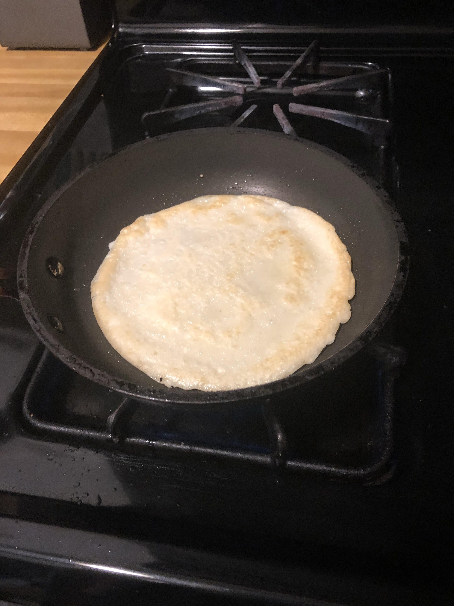
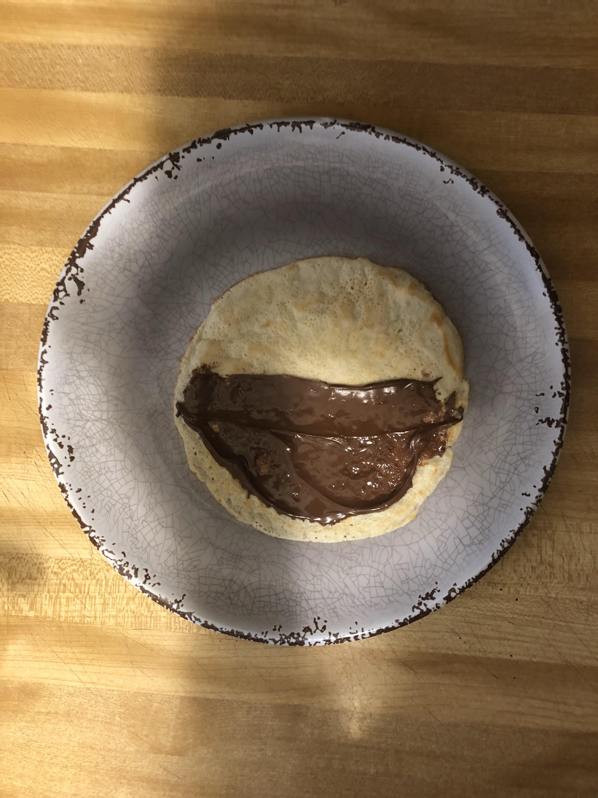
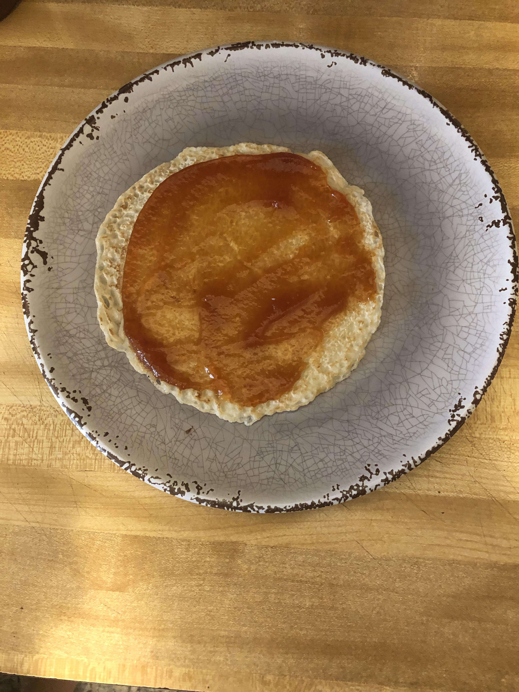
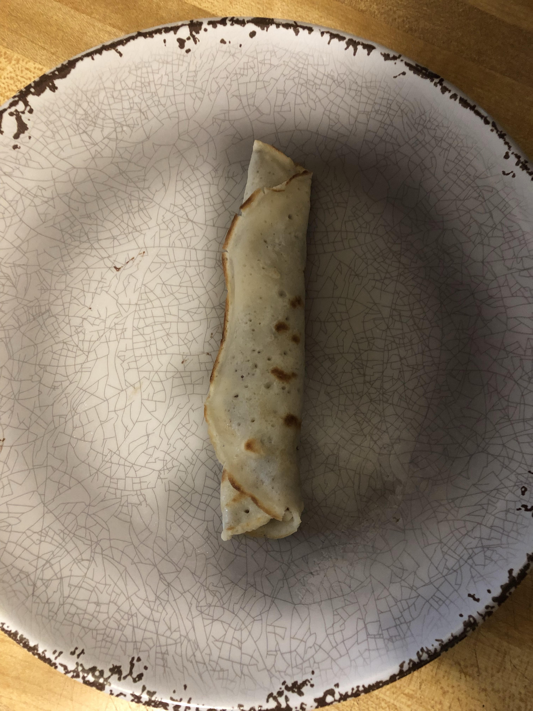
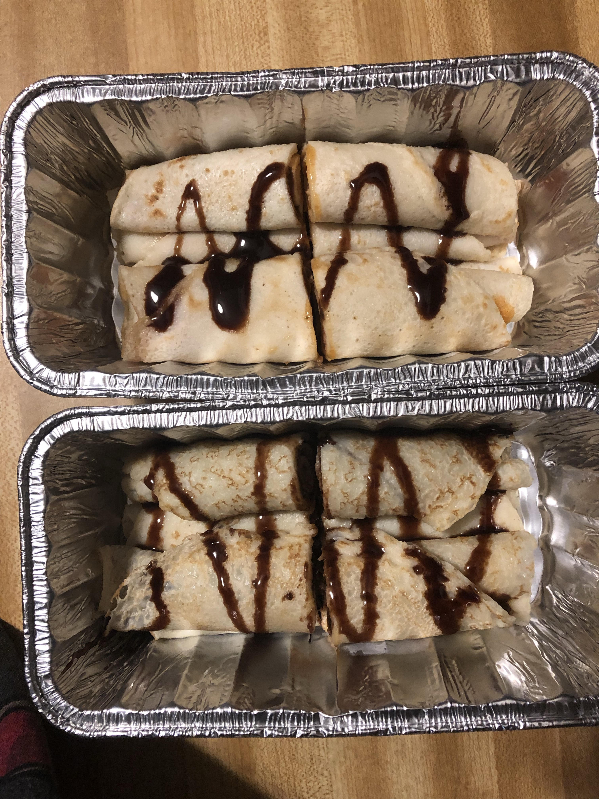

This is a tutorial on how to create the perfect crepe. First, i'll go over all of the ingredients and utensils you will be using.
Take all of your ingredients, put them in your bowl, and mix until it is all one liquid
Grab your pan and fill it with about 10 drops of olive oil
Use and fill the latel all the way and pour it on the pan. Tilt the pan so the mixture evenly spreads out on the pan. Keep the mixture on heat until it solidifies. When it does solidify, flip the crepe over and until the other side is cooked
Repeat step 3 until you have as many crepes as you can make.
Once you have all of your crepes, you need to figure out what you're going to fill your crepe with. The filling can be almost anything. I'm using Pomergranite Jam and Nutella. You can either smear half way, or fully, this is full preference
 
Roll the crepe up top to bottom, if you're only coving half the crepe, make sure the the half way point is parallel to the bottom of the crepe, as shown in the picture
Volia! Here's your new crepe. Now let's get on to decorating it. Grab your now rolled up crepes and put them in a container, whether for immedient use or saving for later, it's nice to not have to get a plate. For my purposes, I cut my crepes in halves. Grab what ever toppings you want and put it on the crepes. I'm using chocolate syrup
Once you have finished making, filling, and decorating your crepes, you can enjoy a great meal/desert. I hope this recipe taught you how to make a crepe!